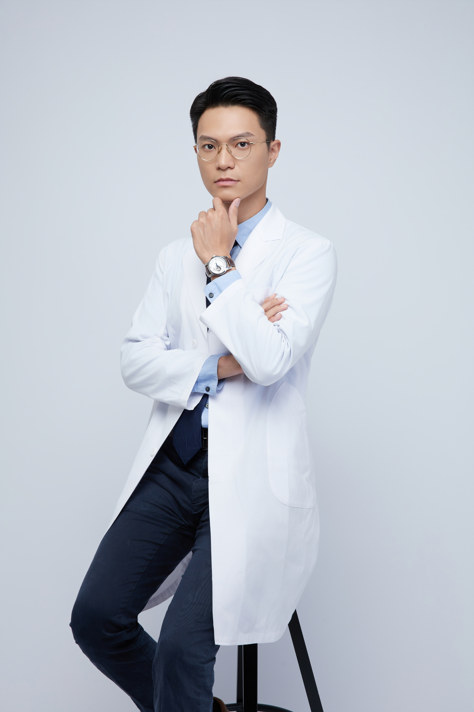
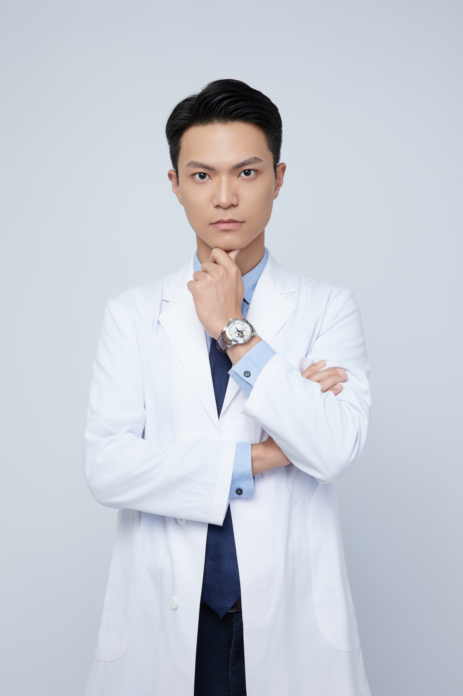
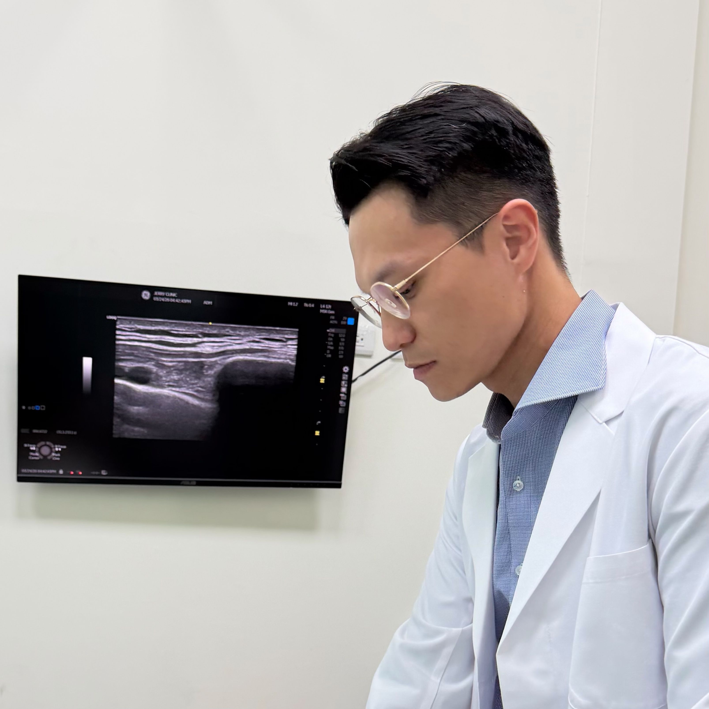
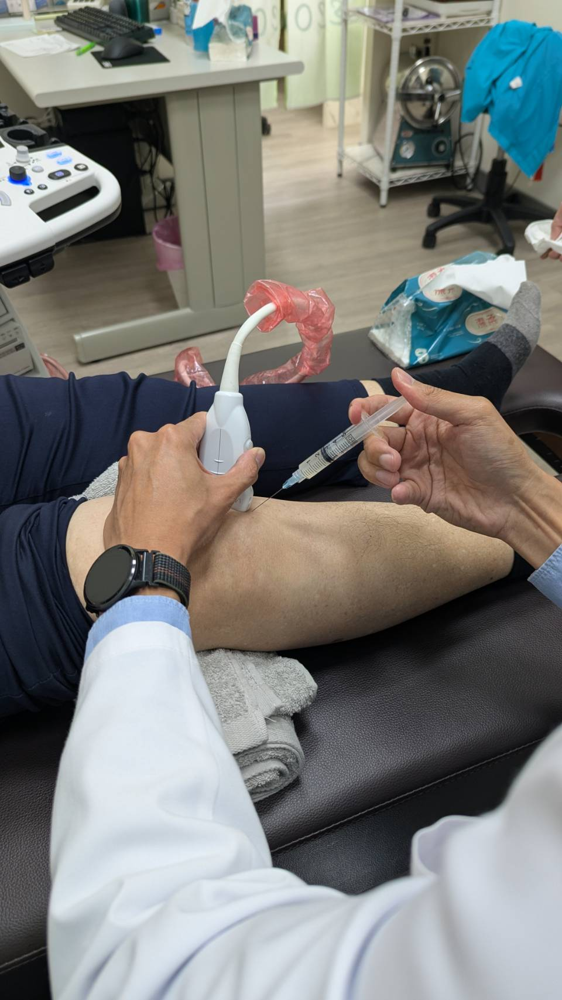

前台中榮總骨科主治醫師・唐士杰院長
不用跑大醫院，享有同等級的骨科診療。從精準診斷到再生治療，我們陪你找出問題、評估選項，一起決定下一步。

前台中榮總骨科主治醫師，帶回同等級的診斷標準與治療品質。
所有注射治療全程即時影像引導，精準到達病灶，不靠手感猜測。
開過刀的骨科醫師替你評估，清楚知道什麼時候需要手術、什麼時候不需要。
健保復健或進階再生治療，客觀分析優缺點，選擇權在你。


「懂手術的人，
才知道什麼時候不需要手術。」
我是土生土長的高雄人，高雄醫學大學畢業後，在台中榮民總醫院完成骨科專科訓練，專攻足踝、脊椎與關節重建，並留任主治醫師。
在醫院開過足踝、脊椎、關節重建等各式骨科手術，我比誰都清楚手術的極限在哪裡——也清楚哪些病人根本不需要走到那一步。從醫學中心走到診所，不是因為放下了手術，而是想用這雙開過刀的手，幫更多人把住那道門。
來到杰立，我承諾讓超音波影像說話，用白話文解釋清楚，把治療的選擇權還給你。

復健科或影像科醫師的超音波技術可能比我更純熟。但在會開刀的骨科醫師裡，對組織解剖的立體理解，讓每一針都更有把握。
所有自費注射治療，全程使用高階超音波導引，由骨科專科醫師親自操作，確保藥物精準送達病灶。
抽取自身血液，離心濃縮出高濃度血小板，注射回受損組織。利用生長因子促進自然修復，適合長期肌腱病變、退化性關節炎、反覆疼痛久未痊癒者。
利用羊膜基質中豐富的生長因子與細胞外基質，提供強效再生刺激。適合重度退化、嚴重肌腱撕裂，或 PRP 效果有限的難治性疼痛。
以高能量聲波衝擊慢性疼痛部位，打散鈣化沉積、促進局部血流與組織再生。對保守治療無效的足底筋膜炎、鈣化性肌腱炎效果顯著，無需開刀。
骨質疏鬆是沉默的疾病，多數人直到骨折才發現。杰立是少數提供完整骨質疏鬆篩檢與追蹤治療的基層診所。
| 週一 | 週二 | 週三 | 週四 | 週五 | 週六 | |
|---|---|---|---|---|---|---|
上午 09:00–12:00 |
||||||
下午 14:30–17:30 |
||||||
晚上 18:30–21:00 |
| 週一 | 週二 | 週三 | 週四 | 週五 | 週六 | |
|---|---|---|---|---|---|---|
上午 08:00–12:00 |
||||||
下午 14:00–21:30 |